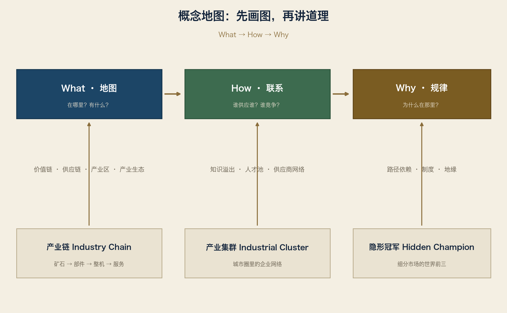

本章只做一件事：把这本书要用到的“图例”定下来。 目标篇幅：约 20 页。读完以后，你能用同一套概念看懂任何一张产业地图。
1.1 概念不是名词解释，是图例
普通书里的概念是“定义”，背下来就行。
地图集里的概念是“图例”：它告诉你地图上每一种符号是什么意思。
一条线 = 产业链 / 价值链 / 供应链（三种切法）
一个圈 = 产业集群
一组同心圆 = 产业生态
一个星标 = 隐形冠军
有了图例，地图才有意义；没有图例，地图只是一堆名字。
所以本章不讲空洞定义，只讲“这个概念在工业地图上怎么画”。

1.2 产业链（Industry Chain / Wertschöpfungskette）
一句话：把一种产品从原料变成成品所需要的一串环节。
画法：一条从上到下的竖线。
以工业机器人为例：
钢铁 / 稀土 / 电子材料
↓
减速器（Nabtesco、Harmonic Drive、绿的谐波）
↓
伺服电机（Yaskawa、Mitsubishi、Siemens、Fanuc）
↓
控制器（Fanuc、ABB、KUKA、Yaskawa）
↓
机械臂本体总装（Fanuc、ABB、KUKA、Yaskawa、Estun、EFORT）
↓
系统集成（把机器人装进生产线：汽车厂、电池厂、3C厂）
↓
使用与维护
产业链回答的问题：这东西是怎么一步步做出来的？
注意：产业链不等于供应链。产业链看“环节”，供应链看“物流”。一家企业可以同时出现在多条产业链里，比如 Bosch 既在汽车产业链里，也在工业自动化产业链里。
1.3 价值链（Value Chain）
一句话：企业或产业内部，价值是如何一步步被创造出来的。
画法：还是一串环节，但每个环节标注“价值占比”或“利润占比”。
价值链概念来自迈克尔·波特（Michael Porter，1985，《竞争优势》）。他把企业活动分成两类：
基础活动：
研发 → 设计 → 生产 → 营销 → 服务
支持活动：
采购 / 人力资源 / 技术开发 / 企业基础设施
工业地图上最常用的价值链，是“微笑曲线”（施振荣，1992）：
利润高 ┤ 研发设计 品牌服务
│ \ /
利润低 ┤ \ /
└──────┴─────┴──────→ 环节
零部件 组装
它解释了一个工业地理现象：组装环节往往会迁移到成本低的地方，而研发与品牌往往留在原地。 这也是“为什么有的城市只有工厂，有的城市既有工厂又有总部”的底层原因之一。
1.4 供应链（Supply Chain / Lieferkette）
一句话：从供应商到客户之间，实物与信息的流动网络。
画法：从“最上游的供应商”指向“最终客户”的箭头网络。
供应链和产业链的区别：
| 产业链 | 供应链 | |
|---|---|---|
| 问的问题 | 有哪些环节？ | 东西怎么送到？ |
| 关注点 | 环节与技术 | 物流、库存、时间、风险 |
| 典型图景 | 零件→部件→整机 | 供应商仓库→生产线旁→客户 |
一个经典例子：半导体供应链。
ASML（荷兰，光刻机）
→ 台积电（中国台湾，晶圆代工）
→ Apple（美国，芯片设计）
→ 富士康（中国/印度，组装）
→ 全球消费者
2018 年以来，供应链成为地缘政治的核心词。它意味着：画地图时，不能只画“产品怎么做”，还要画“依赖谁”。 本书每一张集群地图都会标注“外部依赖”这一项。
1.5 产业集群（Industrial Cluster）
一句话：在同一地理范围内，互相有关联的企业与机构扎堆形成的网络。
画法：地图上的一个圈，圈里是企业和机构，圈外是它们共同服务的市场。
概念来源：马歇尔（Alfred Marshall，1890）最早观察到“产业区”；波特（Michael Porter，1990，《国家竞争优势》）把“集群”（cluster）变成全球产业政策的通用词。
集群为什么存在？马歇尔给出三个经典理由：
1. 专业化供应商：附近就有零件厂、模具厂、维修厂
2. 劳动力池：熟练工人和工程师在本地流动
3. 知识溢出：想法和工艺在午餐桌上、酒吧里、展会里传播
现代研究还要加上：
4. 大学与研究所：本地科研机构输送人才和技术
5. 行业协会与展会：降低交易成本，放大信息
6. 政府与配套：审批、补贴、基础设施
全球最著名的产业集群：
| 集群 | 地点 | 核心产业 |
|---|---|---|
| Silicon Valley | 美国加州 | 半导体、互联网 |
| Stuttgart Region | 德国巴登-符腾堡 | 汽车、机械、自动化 |
| Toyota City / Nagoya | 日本爱知县 | 汽车及零部件 |
| Hsinchu | 中国台湾新竹 | 半导体 |
| 深圳 | 中国广东 | 电子制造 |
| Emilia-Romagna | 意大利北部 | 包装机械、陶瓷、汽车 |
| Eindhoven Brainport | 荷兰 | 半导体设备、电子 |
| Tuttlingen | 德国巴符州 | 医疗器械 |
“集群”是本书最基本的地理单位。 全书每一章都围绕集群展开，而不是围绕单个企业展开。
1.6 产业区（Industrial District）
一句话：一群以中小企业为主、彼此深度分工、长期共处一地的工业社区。
概念来源：马歇尔之后，20 世纪 70–80 年代意大利学者（Becattini 等）用它描述意大利北部的“第三意大利”地区，如：
- 萨索罗（Sassuolo）：瓷砖产业区
- 摩德纳/博洛尼亚（Modena/Bologna）：包装机械产业区
- 卡拉拉（Carpi）：针织服装产业区
产业区与产业集群的区别：
| 产业集群 | 产业区 | |
|---|---|---|
| 范围 | 大，可含大企业 | 小，以中小企业为主 |
| 关键词 | 网络、竞争、位置 | 社区、信任、本地分工 |
| 典型例子 | 硅谷、斯图加特 | 萨索罗瓷砖、图特林根医疗器械 |
产业区提醒我们：工业地图不只有“巨头地图”，还有“小企业网络地图”。 德国南部的很多地方，表面上没有世界五百强，却有一个由几百家小厂组成的精密制造网络。这就是产业区。
1.7 产业生态（Industrial Ecosystem）
一句话：企业和它的生存环境（大学、研究机构、银行、协会、政府、人才）构成的整体。
画法：以产业为中心的一组同心圆。
┌─────────────┐
│ 大学/研究所 │
│ ┌─────────┐ │
│ │ 供应商 │ │
│ │ ┌─────┐ │ │
│ │ │核心企业│ │ │
│ │ └─────┘ │ │
│ │ 客户/渠道 │ │
│ └─────────┘ │
│ 银行/资本/政府 │
└─────────────┘
“生态”这个词来自生物学，1993 年由 James Moore 引入商业领域。它强调：一家企业能不能活，取决于它所在的环境。
例子：为什么深圳能做出全世界最快的消费电子迭代？
华为 / 比亚迪 / 大疆（核心企业）
+ 数万家模具、外壳、电池、屏幕、PCB 供应商
+ 华强北（信息与样品市场）
+ 大学与职业学院（人才）
+ 创投与供应链金融（资金）
+ 港口与机场（出口）
= 一个完整的产业生态
这也是本书第三章会给每个集群列“高校/研究机构/展会”的原因：它们和工厂一样，是地图上的实体。
1.8 隐形冠军（Hidden Champion）
一句话：在细分市场排名世界前三（或所在大洲第一）、年营收不高、公众却很少听说的小巨人。
概念来源：赫尔曼·西蒙（Hermann Simon）1980 年代末在研究德国出口奇迹时提出。
西蒙的定义（不同年份口径略有放宽）：
1. 在细分市场处于世界前三，或所在大洲第一；
2. 年营收低于约 50 亿欧元（早期标准约 10 亿美元）；
3. 公众知名度低，刻意低调。
数量（需注意口径年份）：
| 口径 | 数量 |
|---|---|
| 全球（西蒙最新估计） | 约 2,700 家 |
| 全球（2012 年前后统计） | 2,734 家 |
| 其中德国 | 约 1,300–1,600 家（2012 年口径 1,307 家） |
德国是全球隐形冠军最多的国家。这与“德国中小企业（Mittelstand）”体系直接相关：家族企业、长期主义、深耕细分市场、全球销售、研发投入高。
本书语境下的例子：
| 企业 | 产品 | 全球地位（估算/企业自称口径） |
|---|---|---|
| SEW-EURODRIVE | 减速机与驱动系统 | 全球驱动技术领导者之一 |
| SICK | 工业传感器 | 欧洲最大工业传感器制造商之一 |
| Balluff | 传感器与识别系统 | 细分市场全球领先 |
| Nabtesco | RV 减速器 | 全球份额超 60%（行业引用口径） |
| VAT | 半导体真空阀 | 全球份额约 75%（2023 年） |
| Herrenknecht | 隧道掘进机 | 大型 TBM 全球领导者 |
| Krones | 饮料灌装线 | 全球市场领导者 |
隐形冠军是本书的主角，不是配角。 第一章讲的品牌（Apple、BMW、Bosch）是地图上的大城市；隐形冠军是地图上的关键节点——没有它们，大城市之间根本连不起来。
1.9 一张图看懂所有概念
以“斯图加特的汽车产业”为例，把所有概念放在同一张图上：
┌─────────────────────────────┐
│ 产业生态（同心圆） │
│ 大学：斯图加特大学 / 霍恩海姆 │
│ 研究所：Fraunhofer IPA 等 │
│ 银行、商会（IHK）、州政府 │
│ │
│ ┌───────────────────┐ │
│ │ 产业集群（一个圈） │ │
│ │ │ │
│ │ Mercedes Porsche │ │
│ │ Bosch Mahle │ │
│ │ Trumpf Dürr │ │
│ │ Balluff SEW* │ │
│ │ │ │
│ └───────────────────┘ │
└─────────────────────────────┘
产业链（纵向）：矿石 → 钢材 → 冲压件 → 发动机/电池 → 整车 → 经销商
价值链（价值）：研发最高 → 组装最低 → 品牌服务最高
供应链（流动）：博世 ESP → 奔驰总装线 → 全球 4S 店
隐形冠军（星标）：Balluff、SEW*（*布鲁赫萨尔，位于大卡尔斯鲁厄/斯图加特之间）
读这张图的方法：先看圈（集群），再穿线（产业链），再看流向（供应链），最后找星标（隐形冠军）。 这就是本书每一章的阅读顺序。
1.10 概念 → 地图的转换规则
本章最后，把概念转成这本书的写作规则：
产业链 → 每一章都要画一张“产品是怎么做出来的”竖线图
价值链 → 每个集群都要标注“高价值环节在哪里”
供应链 → 每张集群地图都要画“依赖谁、供应谁”
产业集群 → 每个产业都要列出“全球中心清单”
产业区 → 深潜时用小企业网络补充大企业名单
产业生态 → 每个集群模板都包含大学、研究所、展会、协会
隐形冠军 → 每章都有一节“这里藏着哪些世界第一”
从下一章开始，不再讨论概念，只画地图。
本章练习
选一个你熟悉的产业（比如你工作的行业），画一张这样的图：
产业链：从原料到成品，列出 6 个环节和每个环节的代表企业
集群：列出全球 5 个中心（国家→城市→代表企业）
隐形冠军：找出其中 3 家你不认识但份额很高的企业
画完以后，你就知道第一章到底在说什么了。
词汇笔记（Vokabelnotiz）
| 中文 | Deutsch | English |
|---|---|---|
| 产业链 | Wertschöpfungskette | Industry chain |
| 价值链 | Wertschöpfungskette / Wertkette | Value chain |
| 供应链 | Lieferkette | Supply chain |
| 产业集群 | Industriecluster | Industrial cluster |
| 产业区 | Industriedistrikt | Industrial district |
| 产业生态 | Ökosystem der Industrie | Industrial ecosystem |
| 隐形冠军 | Hidden Champion | Hidden champion |
| 中小企业 | Mittelstand | SMEs / small and medium-sized enterprises |